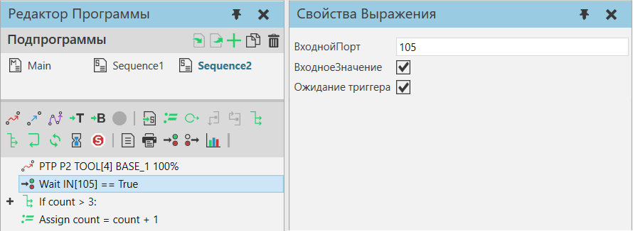

|
ќператор ќжидать бинарный вход задерживает выполнение программы робота до тех пор, пока значение сигнала, отображаемого на входной порт в роботе, не будет иметь определенное значение. ќценка входного порта может быть циклической или запускатьс€ сигнальным событием.

—войства
Ќазвание
|
ќписание
|
¬ходнойѕорт
|
ќпредел€ет входной порт робота, оцениваемый оператором.
|
¬ходное«начение
|
ќпредел€ет, должно ли значение ¬ходнойѕорт быть истинным или ложным дл€ завершени€ инструкции.
|
“риггерќжидани€
|
ќпредел€ет режим оценки дл€ ¬ходнойѕорт.
«начение True ожидает сигнального событи€ или триггера, тогда как значение False не будет ждать проверки значени€ ¬ходнойѕорт.
ѕримечание: —игнальное событие или триггер должно произойти, пока робот выполн€ет оператор, иначе робот пропустит событие.
|
|